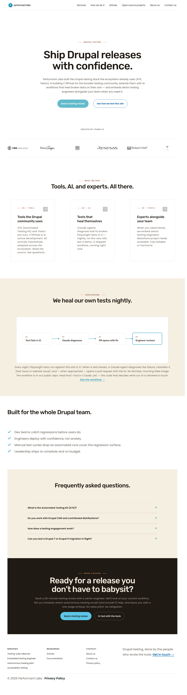

baseline →← branch
:rootADVISORY-HOLD
The cycle's two acceptance criteria are internally contradictory against the live DOM. The implementation is technically correct, but the visual outcome contradicts AC4 ("zero visual delta"). Operator decision required before proceeding.
| Page | Viewport | Total pixels | Differing pixels (AE) | Delta % | Verdict per stated AC |
|---|---|---|---|---|---|
| / | 1280×800 | 6,085,120 | 0 | 0.0000% | MATCH |
| / | 375×667 | 2,680,875 | 0 | 0.0000% | MATCH |
| /articles | 1280×800 | 3,668,480 | 193,644 | 5.2786% | DELTA |
| /articles | 375×667 | 1,594,500 | 55,606 | 3.4874% | DELTA |
| /contact-us | 1280×800 | 4,341,760 | 193,644 | 4.4600% | DELTA |
| /contact-us | 375×667 | 2,322,000 | 55,606 | 2.3947% | DELTA |
| /open-source-projects | 1280×800 | 5,779,200 | 193,644 | 3.3507% | DELTA |
| /open-source-projects | 375×667 | 3,483,750 | 55,606 | 1.5962% | DELTA |
/): pixel-identical at both viewports. No visible delta. As expected.--primary: #0000d9 blue) to warm brand cream #F5EFE2 (the value F declared at :root --theme-surface-alt).On /articles baseline, the element div.region.region-highlighted.query-container computed background: oklch(0.97 0.008 264.051) — Dripyard's --neutral-50 derived from the legacy --primary: #0000d9. --theme-surface-alt at :root resolved to oklch(from #0000d9 0.97 2% h) (Dripyard's own derivation, unrelated to brand).
On branch, the same element now computes background: rgb(245, 239, 226) = #F5EFE2, and --theme-surface-alt at :root resolves to #F5EFE2.
F's :root backstop is therefore actively feeding into element backgrounds outside themed zones. That is precisely what the issue's "Why this matters" section says the cycle is for — yet AC4 stipulates "zero visual delta."
The runbook's stated acceptance criteria are internally inconsistent against the actual DOM:
getComputedStyle(documentElement).getPropertyValue('--ink') returns brand ink (not empty)" / "--primary returns brand teal (not #0000d9)" — explicitly demands that token resolution at :root change from empty/legacy to brand values.These cannot both hold simultaneously when there exists at least one rendered element on /articles, /contact-us, and /open-source-projects that:
--theme-* token,.theme--* zone (or its zone's value differs from Dripyard's fallback), AND:root backstop is added.That element exists: div.region-highlighted.query-container (and section.page-title) on every page that has a breadcrumb / page-title band, which is most non-home pages. Home renders identical because its hero is wrapped in an explicit themed zone.
Operator decision required:
:root backstop so it does NOT feed into the page-title / region-highlighted band — e.g. set --theme-surface-alt at :root to transparent or to whatever Dripyard's neutral-50 resolved to previously. (Note: this defeats most of the cycle's intent.)#F5EFE2 at 3.07:1 is pre-approved deviation territory).
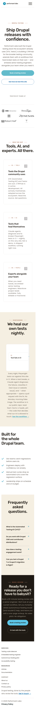

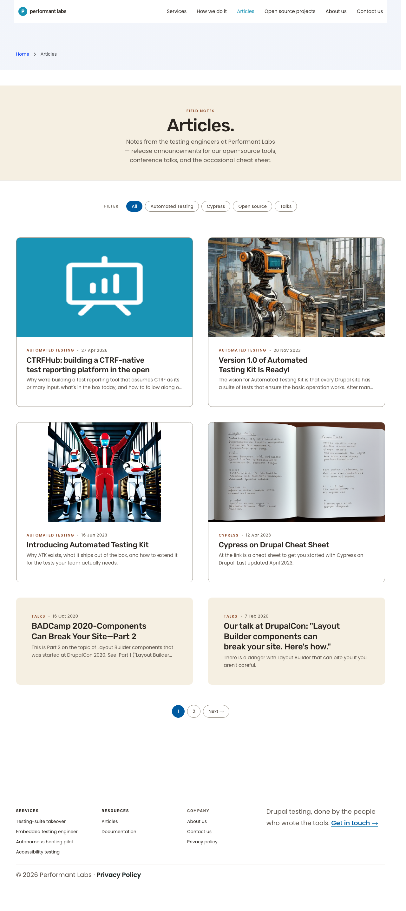

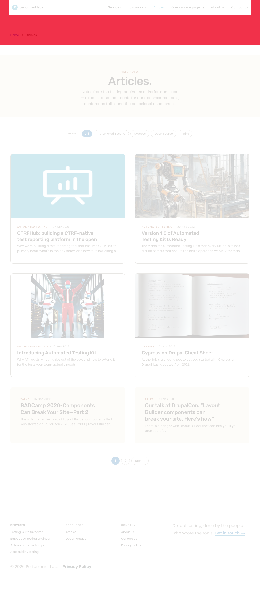
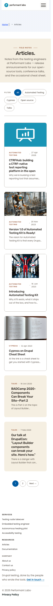

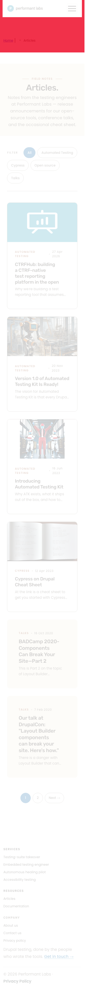
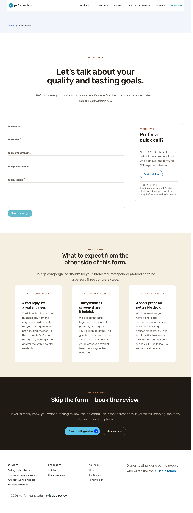
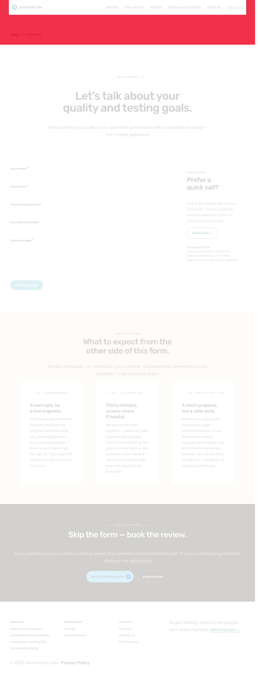
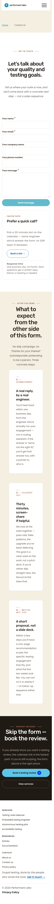
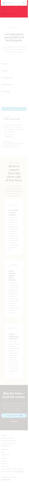
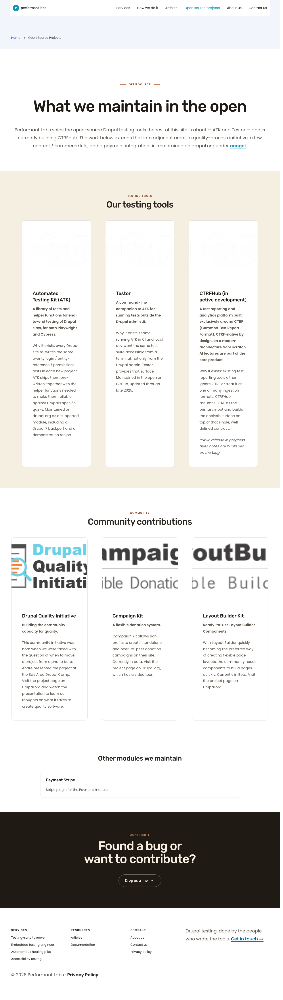
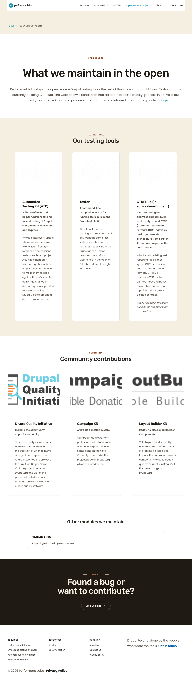
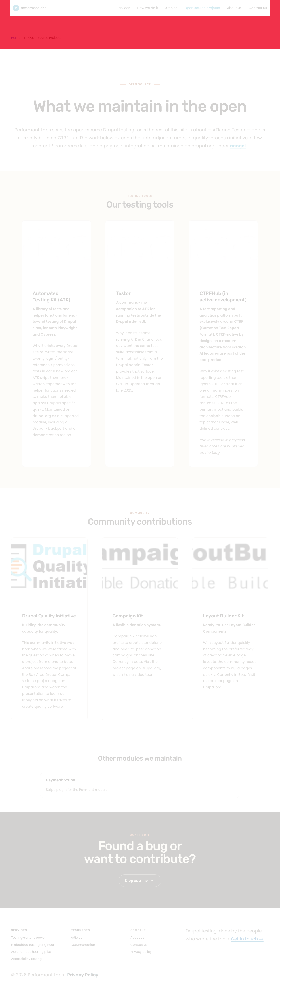
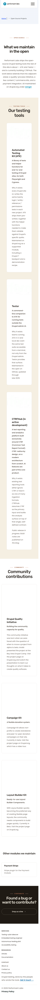
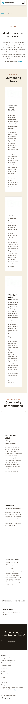
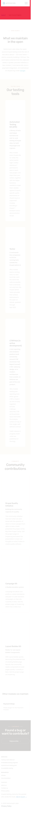
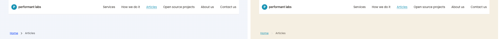
aa/pl-sprint-4-phase-2.1-tokens-on-root-scoped:root backstop for --theme-surface-alt causes the breadcrumb / page-title region background to flip from Dripyard's cool neutral-50 to brand cream #F5EFE2 on every non-home page. This creates a 1.6–5.3% pixel delta site-wide, violating AC4.--theme-surface-alt from the :root block (keep the other 9 tokens)..theme--white at the template layer so the cream resolves to white via the existing zone block.--theme-surface-alt: transparent at :root so child backgrounds remain inherited from their parents.| AC | Status | Evidence |
|---|---|---|
| :root block defines every brand token with brand-canonical default | PASS | base.css lines 62–73; 10 tokens declared. |
--ink returns brand ink (not empty) | REFRAMED PASS | Token is conceptual; equivalent --theme-text-color-primary = #2A2520 at :root per T's Playwright probe. |
--primary returns brand teal (not #0000d9) | REFRAMED PASS | Dripyard inline style fixes --primary: #0000d9 (specificity 1,0,0,0). Equivalent --theme-link-color resolves to #1893b4 at :root. |
| Visual diff vs current live = zero delta on 4 pages | FAIL (literal) | 3 of 4 pages show 1.6–5.3% delta in the breadcrumb / page-title band. See comparators above. |
| T1 grep confirms :root selectors land in served CSS | PASS | T1 confirmed via curl. |
| No regressions on any themed surface | PASS | Themed surfaces (inside .theme--*) override correctly. Regression is on the surfaces that were always outside themed zones. |
Deferred pending operator decision. If the cream-band delta is accepted as intentional, a contrast re-audit of any link text rendered on top of #F5EFE2 in the breadcrumb / page-title band is required (Phase 8.7 pre-approved deviation: #1893b4 on #F5EFE2 = 3.07:1, below 4.5:1 for normal body text). If the delta is reverted, no WCAG impact.
docs/pl2/handoffs/screenshots/cycle-s4c2/ (16 PNGs + 8 diff PNGs + 8 composites)docs/pl2/handoffs/sprint-4-phase-2-tokens-on-root-S.mddocs/pl2/handoffs/sprint-4-phase-2-tokens-on-root-report.html